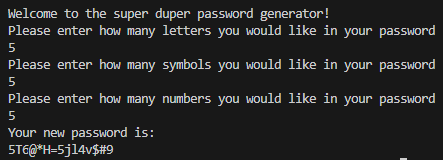

This is a simple yet effective password-generating application that can be used to make your next password!

We offer the user their own choice of selecting how complex their password will be, users will be able to select how much:
Will be in their respective password, the application will then further randomize the positions of each element adding an extra layer of complexity.